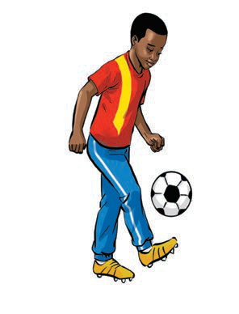
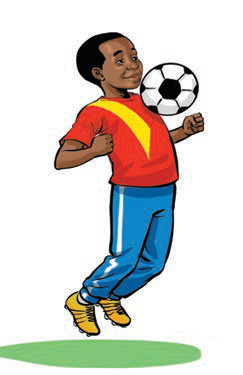

(c) Dribbling
Dribbling is the act of controlling the ball while walking or running, allowing the player to maintain possession and move forward. It requires good ball control, speed, and direction. The player must be very careful to control the ball and pass the opponent without risking losing the ball.